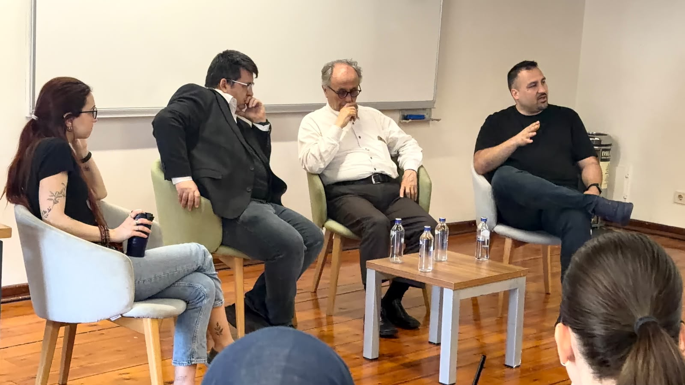
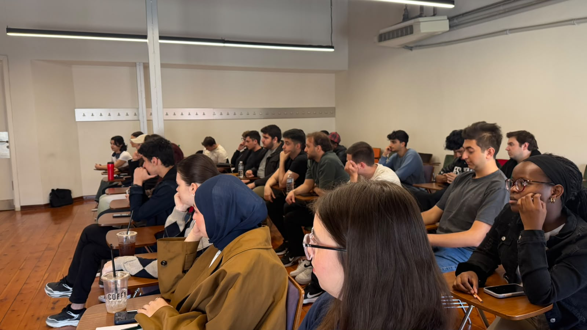
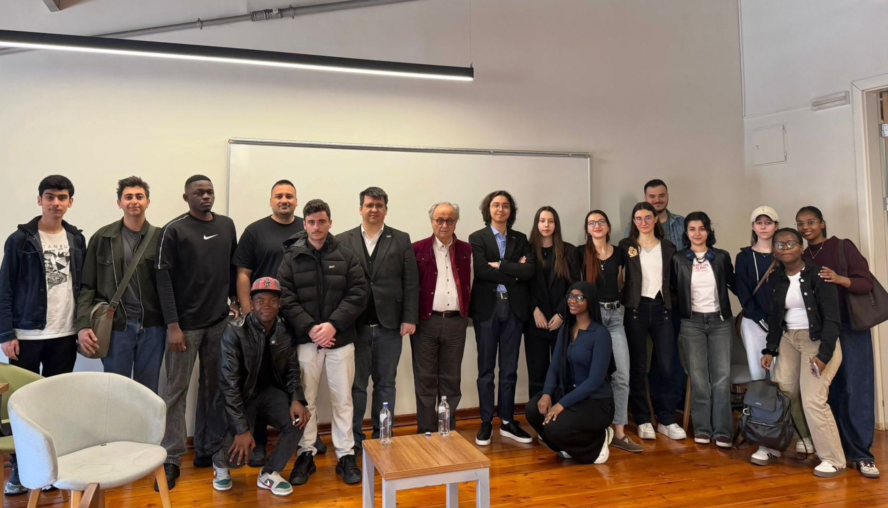
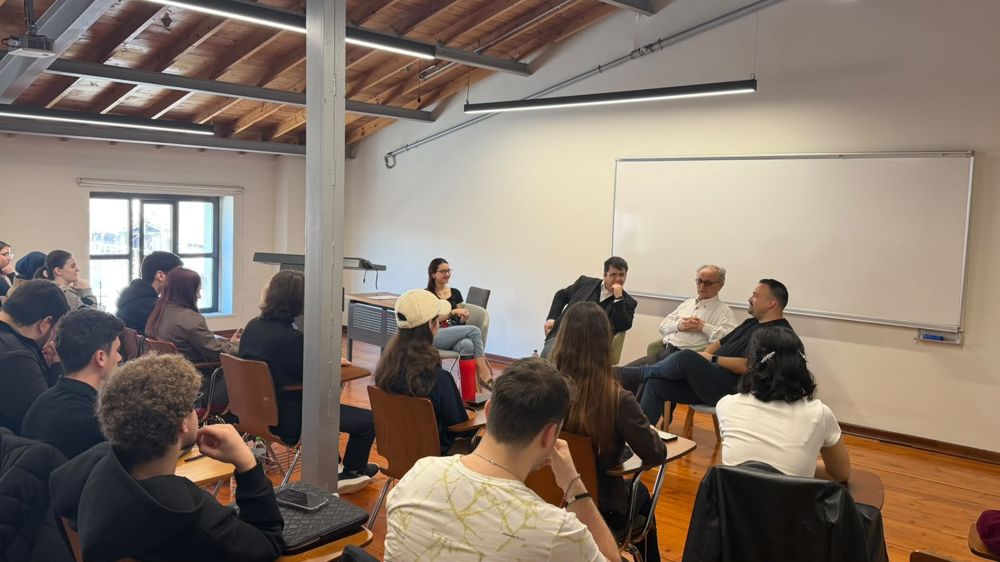

×


TechnoHAS etkinliğimiz kapsamında, “Elektrik-Elektronik Mühendisliği ve Mekatronik Mühendisliğinde Kariyer Seçenekleri” ana temasıyla gerçekleştirdiğimiz panelde alanında uzman akademisyenleri öğrencilerimizle bir araya getirdik.
Moderatörlüğünü Kadir Has Üniversitesi Mekatronik Mühendisliği Bölüm Başkanı Dr. Öğr. Üyesi Mine Saraç Stroppa’nın üstlendiği panelde; Bahçeşehir Üniversitesi Mekatronik Mühendisliği Bölümü öğretim üyesi Dr. Öğr. Üyesi Durul Ulutan ile Kadir Has Üniversitesi öğretim üyelerimizden Prof. Dr. Mehmet Önder Pekcan ve Dr. Öğr. Üyesi Tunçer Baykaş, öğrencilerimizin yönelttiği soruları yanıtladı.
Sohbet havasında gerçekleşen panelde; yapay zekâ çağında kariyer planlaması, akademi ve sektör dinamikleri, mühendislik alanlarındaki güncel gelişmeler ve kariyer yolculuklarında yaşanan önemli dönüm noktaları ele alındı. Akademik ve sektörel deneyimlerin paylaşıldığı etkinlikte, öğrencilerimiz geleceğin mühendislik kariyerlerine dair değerli bilgiler ve tavsiyeler edinme fırsatı buldu.


